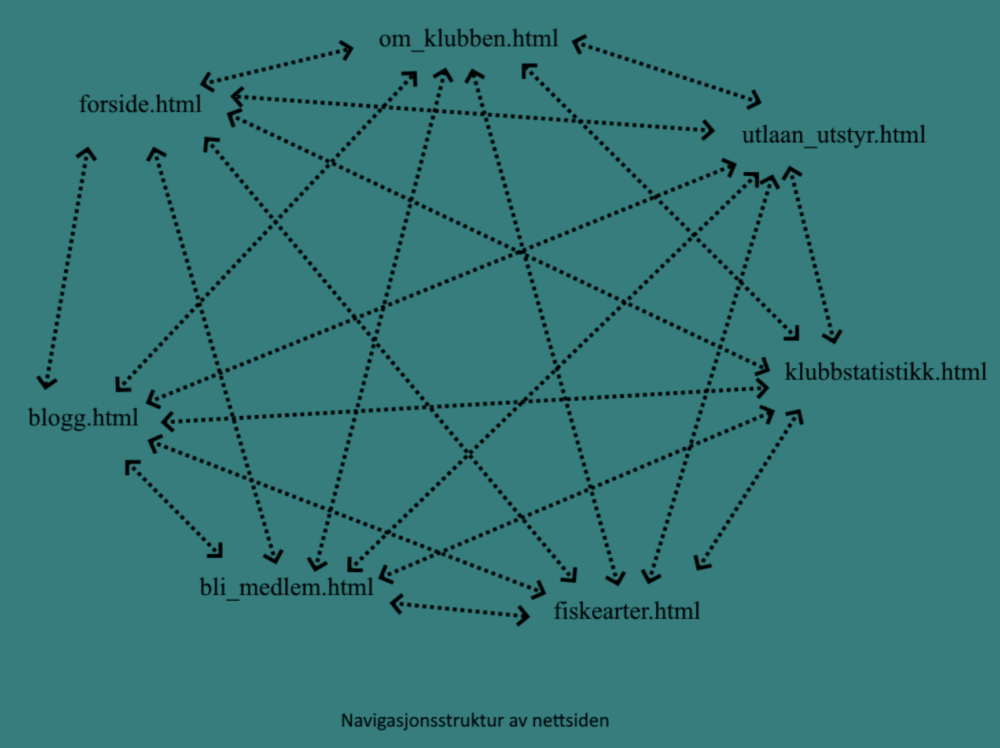
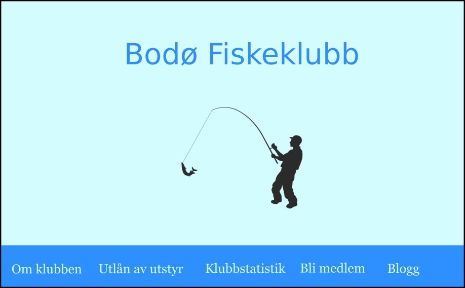
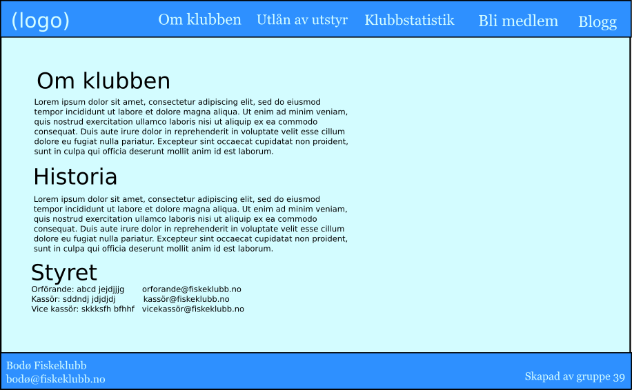
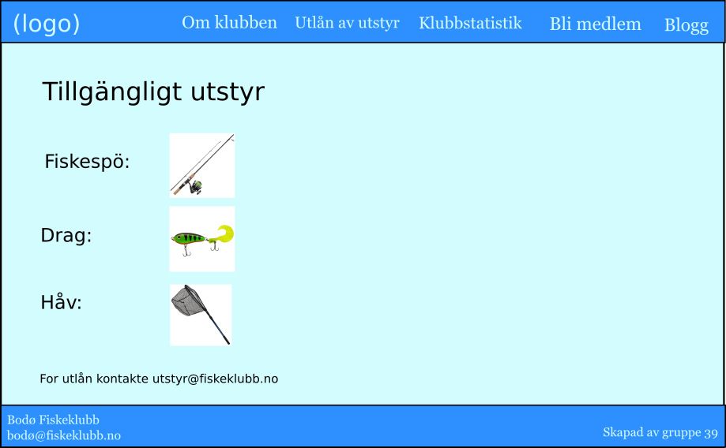
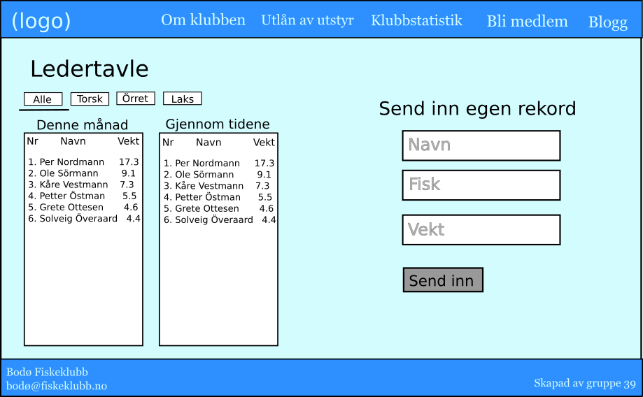
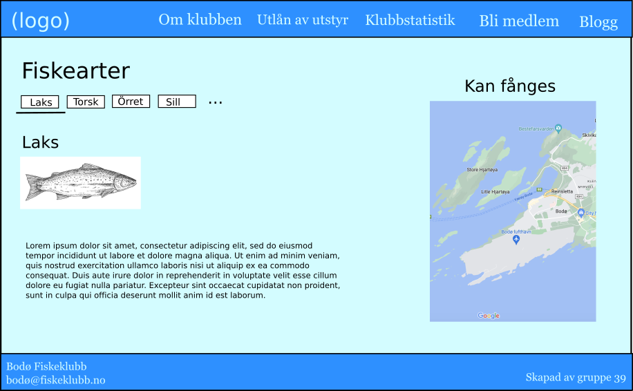
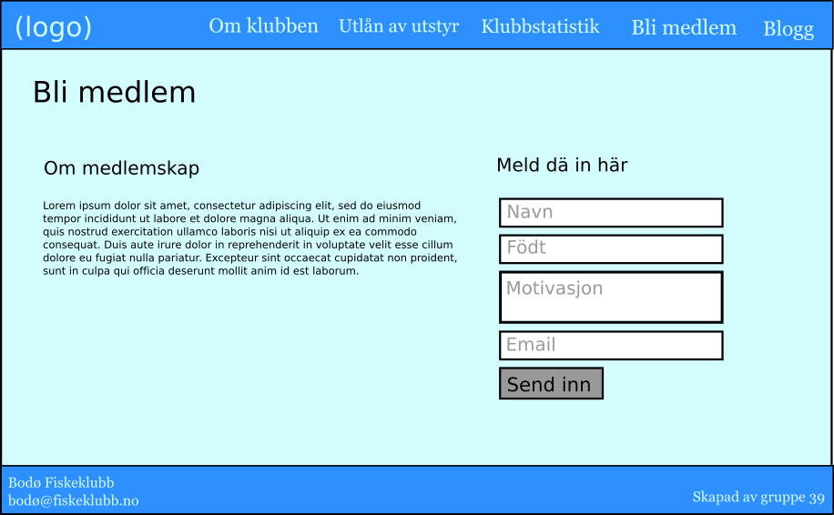
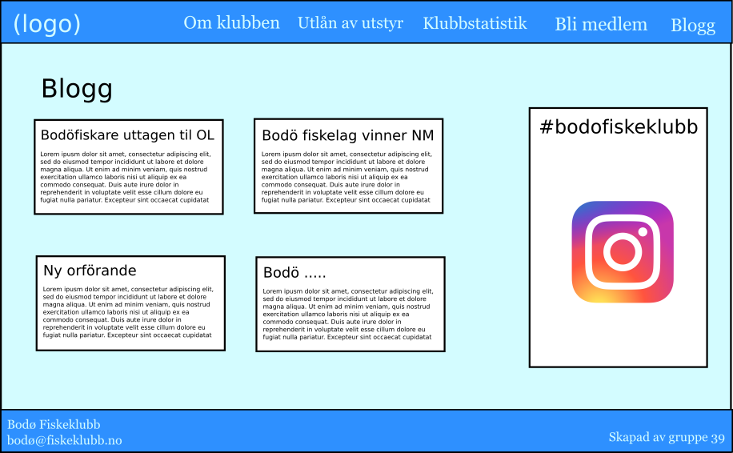

8. Plan

P2: Project Design
Gruppe 39: Bjørn Aslak Dallmann, Oskar Edvardsson, Martin Tryggestad Larsen, Håkon Wiland, Ingvild Engen Økland
Fiktiv klient: Bodø Fiskeklubb
Kontakt: bodø@fiskeklubb.no
Formålet med prosjektet er å gi Bodø fiskeklubb et nettsted tilpasset deres behov. Klubbens målsetting er å øke fiskeinteressen i Bodø ved å verve flere medlemmer. Dette inkluderer formidling av klubbens eksistens, å inspirere til hobbyfiske, å verve medlemmer, gi informasjon til medlemmer og være en portal for leie av utstyr. Målgruppen er hobbyfiskere i Bodø, hvor en stor andel derav er eldre etablerte fiskere, mens en annen andel er yngre potensielle medlemmer, som er nysgjerrige på hobbyfiske.
Navigasjonsstrukturen til Bodø Fiskeklubb av være av en slik grad at det skal være enkelt å navigere seg rundt de forskjellige sidene med få klikk. Fra forsiden skal man ved et klikk komme seg til følgende tema-sider:
Enkelte av disse tema-sidene vil kunne ha undersider, eksempelvis “klubbstatistikk” kan etter behov ha flere undersider med resultater for ulike fiskearter. Likevel vil man alltid kunne navigere seg tilbake til temasidene uansett hvor på siden man er gjennom en Navigation bar øverst på siden. På denne måten vil brukeren enkelt kunne navigere gjennom de ulike sidene uten å måtte gå gjennom forsiden. Brukervennlighet og enkelhet blir vektlagt når det kommer til valg av navigasjon da enkelte brukere tenkes å være mindre teknologisk anlagt.
Når det kommer til design av siden kan det konseptuelt beskrives som minimalistisk og fri for unødvendig informasjon. Siden skal ha et rent design som er appellerende for målgruppen. I dette ligger at bruk av fargenyanser er behagelige å se på for brukeren, samtidig som layout er oversiktlig med et profesjonelt preg. Bruken av Navigation bar bygger opp under dette konseptet å gjør brukers navigasjon enkel. Logo vil også være en del av headeren øverst på siden. Bakgrunnen for valgene av sidelayout er tatt på bakgrunn i at brukerne av siden i hovedsak er ute etter å komme seg ut på tur og ikke nødvendigvis bryr seg om et fancy design.
Formatering av utseende:
Innholdet er fordelt (hovedsakelig) på seks temasider:
Hjemmesiden vil være den første siden en bruker som besøker nettsiden vil se. Det viktigste formålet til hjemmesiden vil derfor være at brukeren får en oversikt over innholdet på nettstedet, og at de intuitivt kan navigere de ulike sidene og finne fram dit de vil. Hjemmesiden vil bestå av en stor logo for fiskeklubben, og Javascript vil brukes slik at logoen reagerer når musepekeren ligger over den. Nederst på siden vil det være en meny-bar med linker til de andre sidene på nettstedet. Siden vil ha et enkelt design, slik at brukeren ikke blir konfrontert med for mye informasjon for tidlig.
Denne siden har som formål å gi brukeren informasjon om klubben. Dette inkluderer informasjon om klubben, dens historie og styrets medlemmer. Informasjonen om styrets medlemmer vil inneholde deres navn, rolle og kontaktinformasjon.
Denne siden har som formål å gi alle medlemmer sjanse å prøve på fiske uansett om man har eget utstyr eller ikke. Klubben ønsker at dette skal senke terskelen for å starte fiske og dermed øke interesse for fiske i Bodø. Siden vil inkludere informasjon om hvilke utstyr som kan lånes, bilde på utstyret og hvem man må kontakte for å låne utstyret.
For fiskere med konkurranseinstinkt har nettsiden en ledertavle hvor brukere kan sende inn sine største fangst. Brukeren sender inn hvilken type fisk de fanget og hvor mye den veide og får melding om at resultatene må godkjennes. På høyre side siden er det to tabeller, en for månedens ledere og en for rekorder gjennom tidene. Over tabellene kan man velge hvilke typer fisk man ønsker å se tabeller over. Til venstre for disse tabellene er det tre felt hvor man kan fylle inn navn, type fisk og vekt for å sende inn egne rekorder. Når brukeren har sendt inn en rekord dukker det opp en melding øverst på nettleseren som leser “Din rekord er blitt sendt inn til godkjenning!”.
Denne siden har som formål å gi brukeren nødvendig informasjon om ulike fiskearter som finnes i Bodø område og hvor de kan fanges. Siden skal være informativ og lett å bruke, på den måten blir det enklere for nyere fiskere å komme seg ut på tur uten å måtte legge inn alt for mye innsats rundt det tekniske
Siden inkluderer følgende informasjon over de ulike fiskeartene: illustrasjon, kjennetegn ved arten, gjennomsnittlig størrelse, anbefalt agn, (mer?). Størrelse og format av illustrasjonen vil være utformet slik at siden laster inn raskt.
I tillegg vil siden inneholde et kart nederst som viser markeringer med farge for hvor de ulike artene kan fanges. For områder der det kreves fiskekort vil dette også bli markert. Kart med denne interaktiviteten vil bli implementert ved hjelp av Javascript.
Klubben ønsker nye medlemmer, derfor skal det være enkelt å bli medlem. En side kalt "Bli medlem!" skal både gi informasjon om medlemskap, og gi besøkende et skjema hvor de lettvint kan fylle ut sin personalia, motivasjon ol. og bli kontaktet av klubbstyret for opptak til klubben. Tilbakemelding på innsendt skjema skal dukke opp ved hjelp av Javascript.
For å skape engasjement i klubben skal siden ha en side hvor klubbstyret og medlemmer kan ytre seg. Denne er todelt: Blogg- og bilde-feed side ved side. Blogg-feeden inneholder nyhetssaker publisert av styret og innsendte blogginnlegg fra medlemmer, sortert etter dato. Bilde-feeden er et bildegalleri som henter de nyeste bildene fra klubbens Instagram-hashtag, typisk publisert av medlemmene fra sine private Instagramkontoer.
Fire ulike Javascript-applikasjoner for å gjøre siden mer interaktiv og spennende.